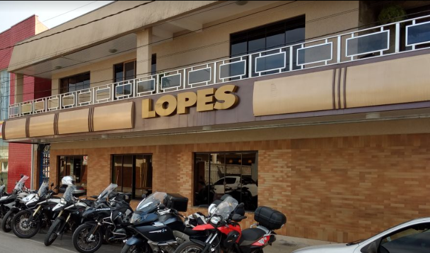
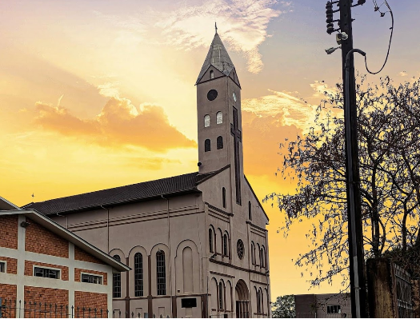
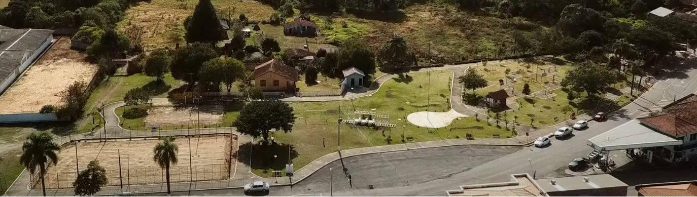

LOCAIS PARA SE VISITAR
Caso esteja passando por Rebouças estes são alguns dos locais que você precisa conhecer!
Restaurante e panificadora Lopes
O restaurante localizado na Rua Jose Afonso Vieira Lopes, 233, é uma ótima opção caso esteja procurando um bom café da manhã, almoço, jantar, ou até mesmo um brunch, possui excelente qualidade, um ambiente aconchegante e é referência em toda a região
Paroquia senhor Bom Jesus
Encontrada no cruzamento entre a Rua Clara Barbosa da Costa e da Rua Honorato Pinto Ferreira a igreja chamada pelos populares de matriz, possui uma arquitetura neoclassica, com fachada em três pavimentos e torre central bem elevada, é um belo local, e algumas festividades são comemoradas em seu pavilhão.
Praça dos ferroviarios
A praça além de todo seu valor histórico, é o ponto de maior encontro social, festivo, cultural e de lazer desta pitoresca cidade, possui um campo de futebol de areia e um de volei de areia, além de um playground para as crianças, é bastante arborizada e possui diversoslocais de descansos, se tornando um bom local para realização de exercicios como a caminhada e a corrida. O espaço é pacifico e relaxante para levar os familiares para um passeio
